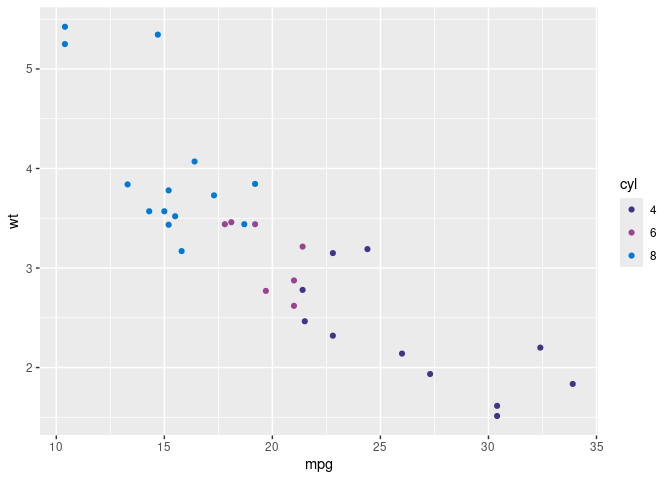

There are 8 colours for use in Public Health Scotland (PHS):
- 4 main colours (PHS purple, PHS magenta, PHS blue and PHS green)
- 4 supporting colours (PHS graphite, PHS teal, PHS liberty and PHS rust)
- Within each colour there are 5 gradients (e.g. for PHS purple, it contains 100%, 80%, 50%, 30% and 10%)
Those 8 colours are shown below:
Each colour with their gradients are shown below:

Please see Chart and Dashboard Accessibility Guidance for more information.
phsstyles contains functions for creating graphics with standard styles in PHS:
-
phs_colours()returns hex value for specific named colours -
theme_phs()apply pre-defined PHS theme for charts -
scale_colour_discrete_phs()apply discrete PHS colour scales for charts -
scale_colour_continuous_phs()apply continuous PHS colour scales for charts -
scale_fill_discrete_phs()apply discrete PHS colour filling scales for charts -
scale_fill_continuous_phs()apply continuous PHS colour filling scales for charts
phsstyles can be used on both the server and desktop versions of RStudio.
Installation
To install phsstyles, the package remotes is required, and can be installed with install.packages("remotes").
You can then install phsstyles on RStudio server from GitHub with:
remotes::install_github("Public-Health-Scotland/phsstyles",
upgrade = "never"
)Network security settings may prevent remotes::install_github() from working on RStudio desktop. If this is the case, phsstyles can be installed by downloading the zip of the repository and running the following code (replacing the section marked <>, including the arrows themselves):
remotes::install_local("<FILEPATH OF ZIPPED FILE>/phsstyles-master.zip",
upgrade = "never"
)Using phsstyles
Load phsstyles using library():
To access the help file for any of phsstyles’ functions, type ?function_name into the RStudio console after loading the package:
?phs_coloursphs_colours
# Generate hex code for those colours
phs_colours(c("phs-blue", "phs-purple"))
#> [1] "#0078D4" "#3F3685"
# List hex code for all the available colours
phs_colours()
#> phs-purple phs-magenta phs-blue phs-green phs-graphite
#> "#3F3685" "#9B4393" "#0078D4" "#83BB26" "#948DA3"
#> phs-teal phs-liberty phs-rust phs-purple-80 phs-purple-50
#> "#1E7F84" "#6B5C85" "#C73918" "#655E9D" "#9F9BC2"
#> phs-purple-30 phs-purple-10 phs-magenta-80 phs-magenta-50 phs-magenta-30
#> "#C5C3DA" "#ECEBF3" "#AF69A9" "#CDA1C9" "#E1C7DF"
#> phs-magenta-10 phs-blue-80 phs-blue-50 phs-blue-30 phs-blue-10
#> "#F5ECF4" "#3393DD" "#80BCEA" "#B3D7F2" "#E6F2FB"
#> phs-green-80 phs-green-50 phs-green-30 phs-green-10 phs-graphite-80
#> "#9CC951" "#C1DD93" "#DAEBBE" "#F3F8E9" "#A9A4B5"
#> phs-graphite-50 phs-graphite-30 phs-graphite-10 phs-teal-80 phs-teal-50
#> "#CAC6D1" "#DFDDE3" "#F4F4F6" "#4B999D" "#8FBFC2"
#> phs-teal-30 phs-teal-10 phs-liberty-80 phs-liberty-50 phs-liberty-30
#> "#BCD9DA" "#E9F2F3" "#897D9D" "#B5AEC2" "#D3CEDA"
#> phs-liberty-10 phs-rust-80 phs-rust-50 phs-rust-30 phs-rust-10
#> "#F0EFF3" "#D26146" "#E39C8C" "#EEC4BA" "#F9EBE8"
# Create a ggplot chart using this function
library(ggplot2)
phs_bar_chart <- ggplot(mtcars, aes(x = as.factor(cyl), fill = as.factor(cyl))) +
geom_bar() +
scale_fill_manual(values = phs_colours(c("phs-purple", "phs-magenta", "phs-blue"))) +
theme(legend.position = "none")
phs_bar_chart
theme_phs
library(ggplot2)
# Apply PHS theme to a chart
qplot(mpg, wt, data = mtcars) + theme_phs()
#> Warning: `qplot()` was deprecated in ggplot2 3.4.0.
#> This warning is displayed once every 8 hours.
#> Call `lifecycle::last_lifecycle_warnings()` to see where this warning was
#> generated.
# Overwirte a feature (e.g. remove vertical gridlines and add horizontal ones)
qplot(mpg, wt, data = mtcars) + theme_phs() +
theme(panel.grid.major.x = element_blank(),
panel.grid.major.y = element_line(colour =
grDevices::rgb(190 / 255,
190 / 255,
190 / 255)))
scale_colour_discrete_phs
# Create a scatter plot using PHS main colour palette
library(ggplot2)
df <- mtcars
df[,'cyl'] <- as.factor(df[,'cyl'])
qplot(mpg, wt, data = df, colour = cyl) +
scale_colour_discrete_phs(palette = "main")
scale_colour_continuous_phs
# Create a scatter plot using continuous colours from PHS main-purples palette
library(ggplot2)
qplot(mpg, wt, data = mtcars, colour = cyl) +
scale_colour_continuous_phs(palette = "main-purples") +
theme_phs()scale_fill_continuous_phs
# Create a raster chart filled with reversed continuous colours from PHS
# main-purples palette
library(ggplot2)
ggplot(faithfuld, aes(waiting, eruptions)) +
geom_raster(aes(fill = density)) +
scale_fill_continuous_phs(palette = "main-purples", direction = -1)
Contributing to phsstyles
At present, the maintainer of this package is Tina Fu.
This package is intended to be in continuous development and contributions may be made by anyone within PHS. If you would like to make a contribution, please first create an issue on GitHub and assign all of the package maintainers to it. This is to ensure that no duplication of effort occurs in the case of multiple people having the same idea. The package maintainers will discuss the issue and get back to you as soon as possible.
While the most obvious and eyecatching (as well as intimidating) way of contributing is by writing a function, this isn’t the only way to make a useful contribution. Fixing typos in documentation, for example, isn’t the most glamorous way to contribute, but is of great help to the package maintainers. Please see this blogpost by Jim Hester for more information on getting started with contributing to open source software.
When contributing, please create a branch in this repository and carry out all work on it. Please ensure you have linked RStudio to your GitHub account using usethis::edit_git_config() prior to making your contribution. When you are ready for a review, please create a pull request and assign all of the package maintainers as reviewers. One or all of them will conduct a review, provide feedback and, if necessary, request changes prior to merging your branch.
Please be mindful of information governance when contributing to this package. No data files (aside from publicly available and downloadable datasets or unless explicitly approved), server connection details, passwords or person identifiable or otherwise confidential information should be included anywhere within this package or any other repository (whether public or private) used within PHS. This includes within code and code commentary. For more information on security when using git and GitHub, and on using git and GitHub for version control more generally, please see the Transforming Publishing Programme’s Git guide and GitHub guidance.
Please feel free to add yourself to the ‘Authors’ section of the Description file when contributing. As a rule of thumb, please assign your role as author ("aut") when writing an exported function, and as contributor ("ctb") for anything else.
phsstyles will, as much as possible, adhere to the tidyverse style guide and the rOpenSci package development guide. The most pertinent points to take from these are:
- All function names should be in lower case, with words separated by an underscore
- Put a space after a comma, never before
- Put a space before and after infix operators such as
<-,==and+ - Limit code to 80 characters per line
- Function documentation should be generated using
roxygen2 - Functions should be tested using
testthatwhere possible - The package should always pass
devtools::check()
It’s not necessary to have experience with GitHub or of building an R package to contribute to phsstyles. If you wish to contribute code then, as long as you can write an R function, the package maintainers can assist with error handling, writing documentation, testing and other aspects of package development. It is advised, however, to consult Hadley Wickham’s R Packages book prior to making a contribution. It may also be useful to consult the documentation and tests of existing functions within this package as a point of reference.
Please note that this README may fail to ‘Knit’ at times as a result of network security settings. This will likely be due to the badges for the package’s release version, continuous integration status and test coverage at the top of the document. If you are editing the README.Rmd document and are unable to successfully get it to ‘Knit’, please contact the package maintainers for assistance.